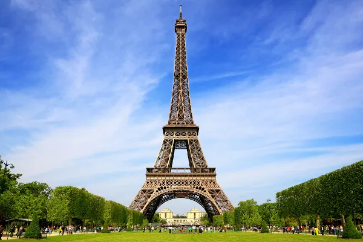
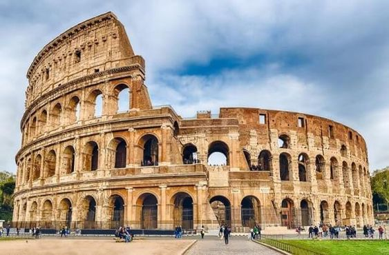
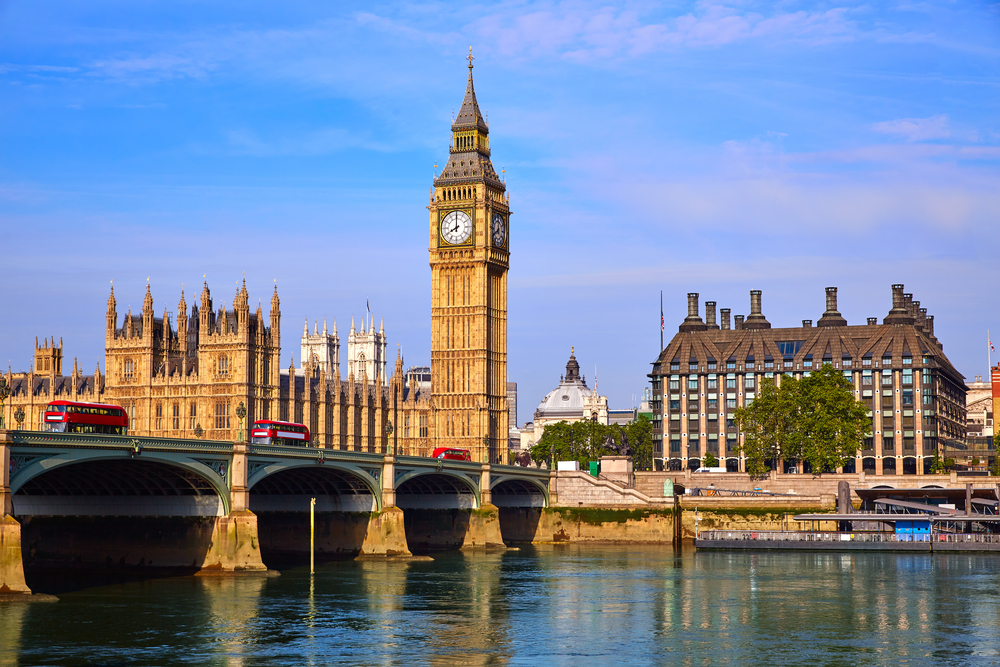

EuroTour
Essa é a EuroTour, o lugar onde você vai encontrar tuddo sobre os pontos turísticos da Europa
Pontos Turísticos
Está pronto parra se aventurar entre os principais pontos turísticos da europa? Veja o que separamoss para você
Torre-Eiffel
Torre Eiffel é uma torre de treliça de ferro forjado no Champ de Mars, em Paris, França. Tem o nome do engenheiro Gustave Eiffel, cuja empresa projetou e construiu a torre. Localmente apelidada de "Dama de Ferro" (em francês: La dame de fer), foi construída de 1887 a 1889 como a peça central da Exposição Universal de 1889 e foi inicialmente criticada por alguns dos principais artistas e intelectuais franceses por seu design, mas tornou-se um ícone cultural global da França e uma das estruturas mais reconhecidas do mundo.
Coliseu
Coliseu, também conhecido como Anfiteatro Flaviano, é um anfiteatro oval localizado no centro da cidade de Roma, capital da Itália. Construído com tijolos revestidos de argamassa e areia, e originalmente cobertos com travertino é o maior anfiteatro já construído e está situado a leste do Fórum Romano.
Big Ben
Big Ben é um grande sino instalado na torre noroeste do Palácio de Westminster, a sede do Parlamento Britânico, localizado em Londres, no Reino Unido. O nome oficial da torre em que o Big Ben está localizado era originalmente Clock Tower, mas ela foi renomeada como Elizabeth Tower em 2012 para marcar o Jubileu de Diamante da Rainha Elizabeth II. A torre foi inaugurada durante a gestão de Sir Benjamin Hall, ministro de Estado da Inglaterra, em 1859. A torre abriga o maior relógio de quatro lados do mundo e é a décima quarta torre de relógio mais alta do mundo. A torre foi construída em estilo neogótico e tem 96 metros de altura, tendo sido concluída em 1858 e iniciado suas atividades em 7 de setembro de 1859. A torre do Big Ben é um ícone cultural britânico, um dos símbolos mais proeminentes do Reino Unido e frequentemente aparece em cenas de filmes, séries de televisão, programas ou documentários ambientados em Londres.